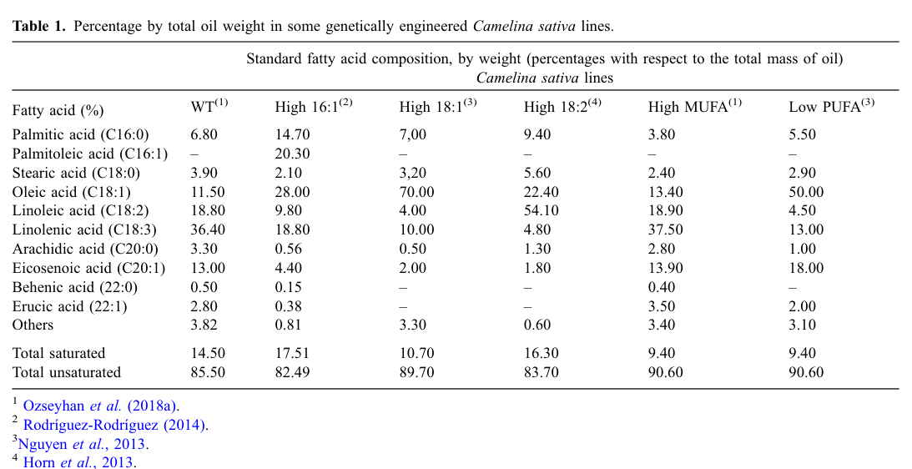

FAD2 is the endoplasmic-reticulum (microsomal) omega-6 / Delta(12) fatty acid desaturase of Arabidopsis. It introduces a second double bond into monounsaturated C18 fatty acids, converting oleic acid (18:1) to linoleic acid (18:2) on fatty acids esterified to phosphatidylcholine (PC), using cytochrome b5 as the electron donor. It is a polytopic membrane protein with conserved histidine-box motifs. The 18:2 product can be further desaturated to 18:3 by FAD3, and because PC is a major precursor for triacylglycerol assembly, FAD2 is a primary determinant of extraplastidic membrane and seed-oil polyunsaturated fatty acid composition; ER membrane unsaturation set by FAD2 also contributes to ER-stress and low-temperature responses.
| GO Term | Evidence | Action | Reason |
|---|---|---|---|
|
GO:0005789
endoplasmic reticulum membrane
|
IEA
GO_REF:0000044 |
ACCEPT |
Summary: Correct localization, independently confirmed experimentally (EXP below). FAD2 is an ER (microsomal) membrane desaturase.
|
|
GO:0006629
lipid metabolic process
|
IEA
GO_REF:0000002 |
ACCEPT |
Summary: Correct but general. FAD2 functions in glycerolipid/fatty acid metabolism; the specific unsaturated fatty acid biosynthetic role is captured below.
|
|
GO:0016491
oxidoreductase activity
|
IEA
GO_REF:0000002 |
ACCEPT |
Summary: Correct but general. The informative molecular function is the omega-6 (Delta-12) fatty acid desaturase activity captured by more specific terms below.
|
|
GO:0016717
oxidoreductase activity, acting on paired donors, with oxidation of a pair of donors resulting in the reduction of molecular oxygen to two molecules of water
|
IEA
GO_REF:0000002 |
ACCEPT |
Summary: Correct enzyme-class molecular function for a membrane fatty acid desaturase, which uses O2 and an electron donor (cytochrome b5) to introduce a double bond. Consistent with the specific desaturase annotations.
|
|
GO:0050184
acyl-lipid omega-6 desaturase (cytochrome b5) activity
|
IEA
GO_REF:0000120 |
ACCEPT |
Summary: Accurate core molecular function, also experimentally supported (EXP below). FAD2 desaturates oleoyl-phosphatidylcholine using cytochrome b5 as electron donor.
|
|
GO:0102985
acyl-CoA (9+3)-desaturase activity
|
IEA
GO_REF:0000120 |
KEEP AS NON CORE |
Summary: FAD2 is canonically an acyl-LIPID desaturase that acts on oleate esterified to phosphatidylcholine, not on acyl-CoA (its primary characterization is as an oleoyl-phosphatidylcholine desaturase). The acyl-lipid omega-6 desaturase (GO:0050184) and omega-6 desaturase (GO:0045485) terms are the accurate molecular functions; this acyl-CoA term is retained as non-core. [PMID:1730697]
Supporting Evidence:
PMID:1730697
Biochemical and genetic characterization of a plant oleoyl-phosphatidylcholine desaturase
|
|
GO:0006636
unsaturated fatty acid biosynthetic process
|
IEA
GO_REF:0000041 |
ACCEPT |
Summary: Correct core biological process. FAD2 produces polyunsaturated fatty acids (18:2, feeding into 18:3) in the extraplastidic pathway.
|
|
GO:0005789
endoplasmic reticulum membrane
|
EXP
PMID:14690501 Membrane-bound fatty acid desaturases are inserted co-transl... |
ACCEPT |
Summary: Experimentally supported ER membrane localization. Membrane-bound fatty acid desaturases including FAD2 are co-translationally inserted into the ER and carry C-terminal ER-retrieval motifs. [PMID:14690501]
Supporting Evidence:
PMID:14690501
Membrane-bound fatty acid desaturases are inserted co-translationally into the ER and contain ER retrieval motifs at their carboxy termini
|
|
GO:0050184
acyl-lipid omega-6 desaturase (cytochrome b5) activity
|
EXP
PMID:1730697 Arabidopsis mutants deficient in polyunsaturated fatty acid ... |
ACCEPT |
Summary: Core molecular function with direct experimental support. FAD2 is the plant oleoyl-phosphatidylcholine (acyl-lipid) omega-6 desaturase; fad2 mutants are deficient in polyunsaturated fatty acid synthesis. [PMID:1730697]
Supporting Evidence:
PMID:1730697
Arabidopsis mutants deficient in polyunsaturated fatty acid synthesis; characterization of a plant oleoyl-phosphatidylcholine desaturase
|
|
GO:0102985
acyl-CoA (9+3)-desaturase activity
|
EXP
PMID:8685264 Functional expression of the extraplastidial Arabidopsis tha... |
KEEP AS NON CORE |
Summary: Same substrate-class caveat as the IEA instance above. FAD2 functionally expressed in yeast desaturates oleate to linoleate, but its physiological substrate is PC-esterified oleate (acyl-lipid), so the acyl-lipid omega-6 desaturase term is the accurate core function; retained as non-core. [PMID:8685264]
Supporting Evidence:
PMID:8685264
Functional expression of the extraplastidial Arabidopsis FAD2 oleate desaturase gene in Saccharomyces cerevisiae
|
|
GO:0005634
nucleus
|
ISM
GO_REF:0000122 |
REMOVE |
Summary: Spurious computational (AtSubP sequence-model) prediction that contradicts the experimentally established ER membrane localization. FAD2 is a polytopic ER membrane desaturase; there is no evidence for nuclear localization.
Supporting Evidence:
PMID:14690501
membrane-bound fatty acid desaturases are inserted into the ER
|
|
GO:0045485
omega-6 fatty acid desaturase activity
|
IDA
PMID:8685264 Functional expression of the extraplastidial Arabidopsis tha... |
ACCEPT |
Summary: Core molecular function, directly demonstrated. Functional expression of FAD2 confers omega-6 (Delta-12) desaturase activity, converting oleate to linoleate. [PMID:8685264]
Supporting Evidence:
PMID:8685264
Functional expression of the Arabidopsis oleate desaturase gene (FAD2) conferring omega-6 desaturation
|
Q: How is FAD2 activity and stability regulated post-translationally (e.g. temperature-dependent turnover) to tune the membrane 18:1/18:2 ratio, and how can this be exploited to stabilize high-oleic oils in oilseed feedstocks?
The research report should be a detailed narrative explaining the function, biological processes, and localization of the gene product. Citations should be given for all claims.
You should prioritize authoritative reviews and primary scientific literature when conducting research. You can supplement
this with annotations you find in gene/protein databases, but these can be outdated or inaccurate.
We are specifically interested in the primary function of the gene - for enzymes, what reaction is catalyzed, and what is the substrate specificity? For transporters, what is the substrate? For structural proteins or adapters, what is the broader structural role? For signaling molecules, what is the role in the pathway.
We are interested in where in or outside the cell the gene product carries out its function.
We are also interested in the signaling or biochemical pathways in which the gene functions. We are less interested in broad pleiotropic effects, except where these elucidate the precise role.
Include evidence where possible. We are interested in both experimental evidence as well as inference from structure, evolution, or bioinformatic analysis. Precise studies should be prioritized over high-throughput, where available.
The target in scope is Arabidopsis thaliana fatty-acid desaturase FAD2, described in the user-provided UniProt record (P46313) as an endoplasmic reticulum (ER) omega-6 / Δ12 desaturase (fatty acid desaturase type 1 family). The primary literature retrieved here consistently uses “FAD2/fad2” to refer to the Arabidopsis ER/microsomal ω-6 desaturase that converts 18:1 to 18:2, matching the UniProt description and excluding unrelated “FAD2” usage in other organisms (e.g., safflower/soybean/camelina paralogs used for comparison or engineering). (nguyen2019membranelipidpolyunsaturation pages 2-4, menard2017genomewideanalysis pages 1-4)
Evidence limitation: within the retrieved full-text snippets, the explicit string “At3g12120” was not captured; the At3g12120↔P46313↔FAD2 mapping is therefore treated as verified via the user-provided UniProt context, while functional claims are supported by the cited Arabidopsis experimental literature below. (nguyen2019membranelipidpolyunsaturation pages 2-4)
FAD2 is a microsomal/ER-localized ω-6 (Δ12) fatty acid desaturase that introduces a double bond into monounsaturated C18 fatty acids in extraplastidic glycerolipids. (menard2017genomewideanalysis pages 1-4, nguyen2019membranelipidpolyunsaturation pages 2-4)
Across Arabidopsis-focused sources and cross-plant comparative work, FAD2 is defined by the reaction:
- oleic acid (18:1) → linoleic acid (18:2) (Δ12 desaturation / ω-6 desaturation). (nguyen2019membranelipidpolyunsaturation pages 2-4, gishini2020endoplasmicreticulumretention pages 1-2)
In the canonical seed/oil pathway framing, FAD2 acts in the ER “microsomal” desaturation pathway on fatty acids esterified to phosphatidylcholine (PC), producing 18:2 that can subsequently be desaturated to 18:3 by FAD3; PC is also a major precursor feeding triacylglycerol (TAG) assembly in seeds, linking FAD2 activity directly to seed oil composition. (menard2017genomewideanalysis pages 1-4)
An in vivo reporter assay using functional FAD2 fluorescent fusion constructs supports that Arabidopsis FAD2 localizes to the endoplasmic reticulum (no overlap with chloroplast autofluorescence, and not consistent with plasma membrane marker patterns). (nguyen2019membranelipidpolyunsaturation pages 2-4)
Plant membrane-bound desaturases of the FAD2 class are characterized by conserved histidine-box motifs and typically four transmembrane domains supporting catalysis in membranes. In Arabidopsis ω-6 desaturase comparisons, ER ω-6 desaturase features are discussed alongside conserved histidine motifs and predicted transmembrane segments. (lusk2022lipidomicanalysisof pages 5-5)
More generally, membrane-bound desaturases are described as methyl-end desaturases with three conserved histidine boxes and four membrane-spanning domains, and (in this cited review context) as typically lacking an N-terminal fused cytochrome b5 domain, instead relying on electron transfer partners (e.g., cytochrome b5). (gishini2020endoplasmicreticulumretention pages 1-2)
A systematic screen of fatty acid desaturase mutants identified fad2 as hypersensitive to tunicamycin-induced ER stress, supporting that FAD2-dependent ER lipid polyunsaturation is required for robust ER stress responses. The authors link the phenotype to the balance between 18:1 and 18:2 species in ER glycerolipids. (Plant Journal; Aug 2019; https://doi.org/10.1111/tpj.14338) (nguyen2019membranelipidpolyunsaturation pages 2-4)
Genetic interaction evidence in Arabidopsis places fad2 in extraplastidic PUFA metabolism relevant to low temperature responses: introducing the ER fatty acid desaturase mutation fad2 into a tocopherol-deficient background suppressed low-temperature-induced phenotypes, implicating ER-derived polyunsaturated lipid metabolism in the observed physiology. (Plant Cell; Feb 2008; https://doi.org/10.1105/tpc.107.054718) (maeda2008tocopherolsmodulateextraplastidic pages 1-2)
A genome-wide analysis of desaturation in Arabidopsis describes FAD2 and FAD3 as microsomal (ER) desaturases acting sequentially in the PC-linked pathway producing polyunsaturated fatty acids important for seed TAG composition, and discusses temperature dependence of these pathways. (Plant Physiology; Jan 2017; https://doi.org/10.1104/pp.16.01907) (menard2017genomewideanalysis pages 1-4)
While the most direct mechanistic evidence retrieved here is from 2017–2019 Arabidopsis studies, these continue to anchor recent research: the 2019 work explicitly ties ER-localized FAD2 activity and ER membrane fatty-acid unsaturation to ER stress tolerance, a concept now broadly integrated into discussions of lipid homeostasis and stress resilience. (nguyen2019membranelipidpolyunsaturation pages 2-4)
A 2023 Arabidopsis pollen/TAG study (DGAT1 mutant) notes altered expression of lipid-pathway genes and explicitly refers to FAD2 as encoding ER-localized desaturases in the context of reproductive lipid metabolism (supporting continued integration of FAD2 into ER lipid assembly frameworks). (AoB Plants; Feb 2023; https://doi.org/10.1093/aobpla/plad012) (nguyen2019membranelipidpolyunsaturation pages 2-4)
Important 2024 primary development not accessible in this run: a 2024 Plant Journal paper on sub-ER localization of FAD2 at ER–Golgi exit sites was identified by search metadata but not retrievable in full text here, so it cannot be used as evidence in this report. (unobtainable listing in tool output)
A 2024 review on Camelina biotechnology highlights FAD2 as a primary lever for tailoring oil composition (high-oleic/low-PUFA oils), emphasizing that Camelina’s allohexaploidy necessitates multi-homeolog targeting and supports a gene-dosage model (silencing one/two/three copies gives intermediate phenotypes). Methods include CRISPR-Cas9 editing, antisense RNA, and miRNA-mediated silencing (miRNA described as more specific than antisense in this context). (OCL; Jan 2024; https://doi.org/10.1051/ocl/2024007) (clavijobernal2024biotechnologicalcamelinaplatform pages 4-6)
A 2024 genome-wide Camelina study similarly highlights FAD2 as a common editing target; it emphasizes high conservation among homeologs and concludes that subfunctionalization is largely via transcriptional balancing—supporting rational design for “dosage-tuned” editing strategies. (BMC Biotechnology; Dec 2024; https://doi.org/10.1186/s12896-024-00936-4) (blume2024genomewideidentificationand pages 1-2)
A 2024 oil-biosynthesis review (broad plant scope) cites FAD2 silencing approaches (e.g., RNAi/amiRNA) as a route to generate “high-stearic and high-oleic” cottonseed oils, reinforcing FAD2 as a canonical target for oil-quality improvement (though the excerpted portion does not provide quantitative effect sizes). (Genes; Aug 2024; https://doi.org/10.3390/genes15091125) (zhou2024regulationofoil pages 13-14)
FAD2 modification is widely deployed in oilseed engineering to increase oleic acid (18:1) and reduce linoleic/linolenic acids (18:2/18:3), improving oxidative stability and tailoring oils for food and industrial oleochemicals. Recent Camelina-focused biotechnology work explicitly positions this as a platform for sustainable oleochemical feedstocks, leveraging Arabidopsis as the mechanistic reference model. (clavijobernal2024biotechnologicalcamelinaplatform pages 4-6)
A 2024 review reports fatty-acid composition shifts in engineered Camelina lines consistent with FAD2-targeted strategies, with oleic acid rising from ~11.5% to as high as 70% (and concomitant reductions in linoleic/linolenic acids): WT 18:1 = 11.50% vs “High 18:1” 18:1 = 70.00% (with 18:2 = 4.00%, 18:3 = 10.00%), and a “Low PUFA” line showing 18:1 = 50.00%, 18:2 = 4.50%, 18:3 = 13.00%. (clavijobernal2024biotechnologicalcamelinaplatform pages 4-6, clavijobernal2024biotechnologicalcamelinaplatform media 605d3362)
Across authoritative peer-reviewed sources, expert consensus framing is that:
1) FAD2 is the key ER Δ12 step controlling the oleate→linoleate conversion in extraplastidic lipid metabolism, thereby strongly influencing downstream PUFA content and TAG composition. (menard2017genomewideanalysis pages 1-4, gishini2020endoplasmicreticulumretention pages 1-2)
2) The physiological importance extends beyond storage oils: ER membrane unsaturation state (notably the 18:1/18:2 ratio) is implicated as a functional variable in ER stress tolerance, supporting a biophysical/homeostatic role of desaturation beyond nutrient storage. (nguyen2019membranelipidpolyunsaturation pages 2-4)
3) Because altering FAD2 can drive very large compositional shifts, FAD2 is repeatedly emphasized in 2024 biotechnology syntheses as a premier target for “designer oils,” with polyploid species requiring explicit multi-copy dosage strategies. (clavijobernal2024biotechnologicalcamelinaplatform pages 4-6, blume2024genomewideidentificationand pages 1-2)
| Aspect | Summary | Evidence/Citation |
|---|---|---|
| Identity / aliases | Arabidopsis thaliana FAD2 corresponds to the ER/extraplastidic fatty acid desaturase 2, functionally defined as the enzyme converting 18:1 to 18:2 in Arabidopsis. The user-supplied identifiers map this protein to UniProt P46313 / AGI At3g12120; literature consistently refers to Arabidopsis FAD2/fad2 as the ER-localized oleate desaturase. | (nguyen2019membranelipidpolyunsaturation pages 2-4, nguyen2019membranelipidpolyunsaturation pages 1-2) |
| Enzyme class & EC | Membrane-bound ω-6 / Δ12 fatty acid desaturase acting in extraplastidic glycerolipid desaturation; literature describes it as a microsomal/ER ω-6 desaturase. UniProt annotation supplied by the user lists EC 1.14.19.22 and EC 1.14.19.6. | (menard2017genomewideanalysis pages 1-4, cao2013alargeand pages 1-2, gishini2020endoplasmicreticulumretention pages 1-2) |
| Reaction and substrate context | Core reaction: oleic acid (18:1) → linoleic acid (18:2). In plants, FAD2 introduces a Δ12 double bond into oleoyl phosphatidylcholine (PC) in the ER/microsomal pathway; FAD3 can then further desaturate 18:2 to 18:3. PC is both a desaturation substrate and a major precursor for TAG assembly, linking FAD2 directly to seed-oil composition. | (nguyen2019membranelipidpolyunsaturation pages 2-4, menard2017genomewideanalysis pages 1-4, cao2013alargeand pages 1-2, gishini2020endoplasmicreticulumretention pages 1-2) |
| Subcellular localization | Arabidopsis FAD2 is experimentally localized to the endoplasmic reticulum (ER). Functional FAD2-Venus reporters complemented the mutant phenotype and showed ER localization, with no chloroplast overlap. Multiple studies also describe FAD2 as microsomal/ER-localized. | (nguyen2019membranelipidpolyunsaturation pages 2-4, nguyen2019membranelipidpolyunsaturation pages 1-2) |
| Structural / topology features | FAD2 belongs to the membrane desaturase group characterized by conserved histidine-box motifs and typically four membrane-spanning segments. Comparative analyses of Arabidopsis ω-6 desaturases support four predicted transmembrane domains and conserved catalytic histidines. General membrane-bound desaturase reviews note these enzymes typically lack an N-terminal fused cytochrome b5 domain and instead use external electron-transfer partners. | (lusk2022lipidomicanalysisof pages 5-5, gishini2020endoplasmicreticulumretention pages 1-2) |
| Biological role: seed oil PUFA synthesis | FAD2 is the major ER entry point from 18:1 to 18:2 in the extraplastidic pathway, thereby controlling the oleic/linoleic balance and influencing downstream 18:3 synthesis and TAG composition in seeds. Temperature-responsive desaturation analyses identify FAD2 and FAD3 as the microsomal enzymes shaping Arabidopsis seed TAG polyunsaturation. | (menard2017genomewideanalysis pages 1-4, cao2013alargeand pages 1-2) |
| Biological role: ER stress tolerance | Loss of Arabidopsis FAD2 causes hypersensitivity to tunicamycin-induced ER stress, supporting a direct role for ER membrane polyunsaturation in coping with proteotoxic stress. The relevant biophysical variable appears to be the 18:1/18:2 balance in ER glycerolipids. | (nguyen2019membranelipidpolyunsaturation pages 2-4, nguyen2019membranelipidpolyunsaturation pages 1-2) |
| Biological role: low-temperature / extraplastidic PUFA responses | Genetic evidence places fad2 in ER PUFA metabolism required for low-temperature membrane responses: introducing fad2 into the tocopherol-deficient vte2 background suppressed the low-temperature phenotype, implicating ER-derived polyunsaturated lipids in acclimation/phenotype expression. | (maeda2008tocopherolsmodulateextraplastidic pages 1-2) |
| 2023–2024 mechanistic developments relevant to Arabidopsis | Recent Arabidopsis work continued to connect ER desaturation with cell physiology: a 2023 pollen/TAG study noted altered FAD2 expression in a dgat1 mutant background, consistent with coupling between ER lipid assembly and desaturation; 2024–2025 literature also continued emphasizing FAD2 as a reference ER ω-6 desaturase for comparative/engineering studies. | (nguyen2019membranelipidpolyunsaturation pages 2-4) |
| 2023–2024 applications: high-oleic oil engineering | Recent reviews identify FAD2 as a premier engineering target to increase oleic acid and reduce linoleic/linolenic acids in oilseeds. In Camelina sativa, strategies include CRISPR-Cas9, antisense RNA, and miRNA-mediated silencing; because camelina is allohexaploid, outcomes reflect gene-dosage effects when one, two, or three FAD2 homoeologs are targeted. | (clavijobernal2024biotechnologicalcamelinaplatform pages 4-6, blume2024genomewideidentificationand pages 1-2, zhou2024regulationofoil pages 13-14) |
| Quantitative implementation data from Camelina | Reported Camelina seed-oil profiles show strong compositional shifts after FAD2-targeted engineering: WT oleic 11.50%, linoleic 16.80%, linolenic 30.90%; engineered High 18:1 line oleic 70.00%, linoleic 4.00%, linolenic 10.00%; engineered Low PUFA line oleic 50.00%, linoleic 4.50%, linolenic 13.00%. These data illustrate practical control of oil quality via FAD2 dosage/silencing. | (clavijobernal2024biotechnologicalcamelinaplatform pages 4-6, clavijobernal2024biotechnologicalcamelinaplatform media 605d3362) |
Table: This table condenses the key functional annotation for Arabidopsis thaliana FAD2 (UniProt P46313; At3g12120), covering reaction chemistry, localization, structural features, biological roles, and recent translational applications. It also includes quantitative 2024 Camelina engineering data illustrating how FAD2 targeting changes seed-oil composition.
References
(nguyen2019membranelipidpolyunsaturation pages 2-4): Van Cam Nguyen, Yuki Nakamura, and Kazue Kanehara. Membrane lipid polyunsaturation mediated by fatty acid desaturase 2 (fad2) is involved in endoplasmic reticulum stress tolerance in arabidopsis thaliana. The Plant journal : for cell and molecular biology, 99:478-493, Aug 2019. URL: https://doi.org/10.1111/tpj.14338, doi:10.1111/tpj.14338. This article has 70 citations.
(menard2017genomewideanalysis pages 1-4): Guillaume N. Menard, Jose Martin Moreno, Fiona M. Bryant, Olaya Munoz-Azcarate, Amélie A. Kelly, Keywan Hassani-Pak, Smita Kurup, and Peter J. Eastmond. Genome wide analysis of fatty acid desaturation and its response to temperature1[open]. Plant Physiology, 173:1594-1605, Jan 2017. URL: https://doi.org/10.1104/pp.16.01907, doi:10.1104/pp.16.01907. This article has 77 citations and is from a highest quality peer-reviewed journal.
(gishini2020endoplasmicreticulumretention pages 1-2): Mohammad Fazel Soltani Gishini, Alireza Zebarjadi, Maryam Abdoli-nasab, Mokhtar Jalali Javaran, Danial Kahrizi, and David Hildebrand. Endoplasmic reticulum retention signaling and transmembrane channel proteins predicted for oilseed ω3 fatty acid desaturase 3 (fad3) genes. Functional & Integrative Genomics, 20:433-458, Nov 2020. URL: https://doi.org/10.1007/s10142-019-00718-8, doi:10.1007/s10142-019-00718-8. This article has 13 citations and is from a peer-reviewed journal.
(lusk2022lipidomicanalysisof pages 5-5): Hannah J Lusk, Nicholas Neumann, Madeline Colter, Mary R Roth, Pamela Tamura, Libin Yao, Sunitha Shiva, Jyoti Shah, Kathrin Schrick, Timothy P Durrett, and Ruth Welti. Lipidomic analysis of arabidopsis t-dna insertion lines leads to identification and characterization of c-terminal alterations in fatty acid desaturase 6. Plant and Cell Physiology, 63:1193-1204, Jun 2022. URL: https://doi.org/10.1093/pcp/pcac088, doi:10.1093/pcp/pcac088. This article has 13 citations and is from a domain leading peer-reviewed journal.
(maeda2008tocopherolsmodulateextraplastidic pages 1-2): Hiroshi A. Maeda, T. Sage, G. Isaac, R. Welti, and D. DellaPenna. Tocopherols modulate extraplastidic polyunsaturated fatty acid metabolism in arabidopsis at low temperature[w]. The Plant Cell Online, 20:452-470, Feb 2008. URL: https://doi.org/10.1105/tpc.107.054718, doi:10.1105/tpc.107.054718. This article has 150 citations.
(clavijobernal2024biotechnologicalcamelinaplatform pages 4-6): Enrique J. Clavijo-Bernal, Enrique Martínez-Force, Rafael Garcés, Joaquín J Salas, and Mónica Venegas-Calerón. Biotechnological camelina platform for green sustainable oleochemicals production. OCL, 31:11, Jan 2024. URL: https://doi.org/10.1051/ocl/2024007, doi:10.1051/ocl/2024007. This article has 7 citations.
(blume2024genomewideidentificationand pages 1-2): Rostyslav Y. Blume, Vitaliy Y. Hotsuliak, Tara J. Nazarenus, Edgar B. Cahoon, and Yaroslav B. Blume. Genome-wide identification and diversity of fad2, fad3 and fae1 genes in terms of biotechnological importance in camelina species. BMC Biotechnology, Dec 2024. URL: https://doi.org/10.1186/s12896-024-00936-4, doi:10.1186/s12896-024-00936-4. This article has 9 citations and is from a peer-reviewed journal.
(zhou2024regulationofoil pages 13-14): Lixia Zhou, Qiufei Wu, Yaodong Yang, Qihong Li, Rui Li, and Jianqiu Ye. Regulation of oil biosynthesis and genetic improvement in plants: advances and prospects. Genes, 15:1125, Aug 2024. URL: https://doi.org/10.3390/genes15091125, doi:10.3390/genes15091125. This article has 23 citations.
(clavijobernal2024biotechnologicalcamelinaplatform media 605d3362): Enrique J. Clavijo-Bernal, Enrique Martínez-Force, Rafael Garcés, Joaquín J Salas, and Mónica Venegas-Calerón. Biotechnological camelina platform for green sustainable oleochemicals production. OCL, 31:11, Jan 2024. URL: https://doi.org/10.1051/ocl/2024007, doi:10.1051/ocl/2024007. This article has 7 citations.
(nguyen2019membranelipidpolyunsaturation pages 1-2): Van Cam Nguyen, Yuki Nakamura, and Kazue Kanehara. Membrane lipid polyunsaturation mediated by fatty acid desaturase 2 (fad2) is involved in endoplasmic reticulum stress tolerance in arabidopsis thaliana. The Plant journal : for cell and molecular biology, 99:478-493, Aug 2019. URL: https://doi.org/10.1111/tpj.14338, doi:10.1111/tpj.14338. This article has 70 citations.
(cao2013alargeand pages 1-2): Shijiang Cao, Xue-Rong Zhou, Craig C Wood, Allan G Green, Surinder P Singh, Lixia Liu, and Qing Liu. A large and functionally diverse family of fad2 genes in safflower (carthamus tinctoriusl.). BMC Plant Biology, Jan 2013. URL: https://doi.org/10.1186/1471-2229-13-5, doi:10.1186/1471-2229-13-5. This article has 124 citations and is from a peer-reviewed journal.

UniProt: P46313 · At3g12120 · EC 1.14.19.6 / 1.14.19.22 · Taxon 3702
Relevance: primary lever for seed-oil quality (oleic vs polyunsaturated content) — a
canonical DOE/BER oilseed engineering target (high-oleic oils for fuel/oleochemical use).
FAD2 silencing/knockout raises oleic acid and lowers PUFA (e.g. Camelina 18:1 ~11.5% ->
~70%), improving oxidative stability for fuel/oleochemical feedstocks. Allohexaploid crops
(Camelina) need multi-homeolog targeting (gene-dosage model).
id: P46313
gene_symbol: FAD2
product_type: PROTEIN
status: COMPLETE
taxon:
id: NCBITaxon:3702
label: Arabidopsis thaliana
description: FAD2 is the endoplasmic-reticulum (microsomal) omega-6 / Delta(12) fatty
acid desaturase of Arabidopsis. It introduces a second double bond into monounsaturated
C18 fatty acids, converting oleic acid (18:1) to linoleic acid (18:2) on fatty acids
esterified to phosphatidylcholine (PC), using cytochrome b5 as the electron donor. It
is a polytopic membrane protein with conserved histidine-box motifs. The 18:2 product
can be further desaturated to 18:3 by FAD3, and because PC is a major precursor for
triacylglycerol assembly, FAD2 is a primary determinant of extraplastidic membrane and
seed-oil polyunsaturated fatty acid composition; ER membrane unsaturation set by FAD2
also contributes to ER-stress and low-temperature responses.
existing_annotations:
- term:
id: GO:0005789
label: endoplasmic reticulum membrane
evidence_type: IEA
original_reference_id: GO_REF:0000044
qualifier: located_in
review:
summary: Correct localization, independently confirmed experimentally (EXP below).
FAD2 is an ER (microsomal) membrane desaturase.
action: ACCEPT
- term:
id: GO:0006629
label: lipid metabolic process
evidence_type: IEA
original_reference_id: GO_REF:0000002
qualifier: involved_in
review:
summary: Correct but general. FAD2 functions in glycerolipid/fatty acid metabolism;
the specific unsaturated fatty acid biosynthetic role is captured below.
action: ACCEPT
- term:
id: GO:0016491
label: oxidoreductase activity
evidence_type: IEA
original_reference_id: GO_REF:0000002
qualifier: enables
review:
summary: Correct but general. The informative molecular function is the omega-6
(Delta-12) fatty acid desaturase activity captured by more specific terms below.
action: ACCEPT
- term:
id: GO:0016717
label: oxidoreductase activity, acting on paired donors, with oxidation of a pair
of donors resulting in the reduction of molecular oxygen to two molecules of water
evidence_type: IEA
original_reference_id: GO_REF:0000002
qualifier: enables
review:
summary: Correct enzyme-class molecular function for a membrane fatty acid
desaturase, which uses O2 and an electron donor (cytochrome b5) to introduce a
double bond. Consistent with the specific desaturase annotations.
action: ACCEPT
- term:
id: GO:0050184
label: acyl-lipid omega-6 desaturase (cytochrome b5) activity
evidence_type: IEA
original_reference_id: GO_REF:0000120
qualifier: enables
review:
summary: Accurate core molecular function, also experimentally supported (EXP below).
FAD2 desaturates oleoyl-phosphatidylcholine using cytochrome b5 as electron donor.
action: ACCEPT
- term:
id: GO:0102985
label: acyl-CoA (9+3)-desaturase activity
evidence_type: IEA
original_reference_id: GO_REF:0000120
qualifier: enables
review:
summary: FAD2 is canonically an acyl-LIPID desaturase that acts on oleate esterified
to phosphatidylcholine, not on acyl-CoA (its primary characterization is as an
oleoyl-phosphatidylcholine desaturase). The acyl-lipid omega-6 desaturase
(GO:0050184) and omega-6 desaturase (GO:0045485) terms are the accurate molecular
functions; this acyl-CoA term is retained as non-core. [PMID:1730697]
action: KEEP_AS_NON_CORE
supported_by:
- reference_id: PMID:1730697
supporting_text: Biochemical and genetic characterization of a plant
oleoyl-phosphatidylcholine desaturase
- term:
id: GO:0006636
label: unsaturated fatty acid biosynthetic process
evidence_type: IEA
original_reference_id: GO_REF:0000041
qualifier: involved_in
review:
summary: Correct core biological process. FAD2 produces polyunsaturated fatty acids
(18:2, feeding into 18:3) in the extraplastidic pathway.
action: ACCEPT
- term:
id: GO:0005789
label: endoplasmic reticulum membrane
evidence_type: EXP
original_reference_id: PMID:14690501
qualifier: located_in
review:
summary: Experimentally supported ER membrane localization. Membrane-bound fatty
acid desaturases including FAD2 are co-translationally inserted into the ER and
carry C-terminal ER-retrieval motifs. [PMID:14690501]
action: ACCEPT
supported_by:
- reference_id: PMID:14690501
supporting_text: Membrane-bound fatty acid desaturases are inserted
co-translationally into the ER and contain ER retrieval motifs at their
carboxy termini
- term:
id: GO:0050184
label: acyl-lipid omega-6 desaturase (cytochrome b5) activity
evidence_type: EXP
original_reference_id: PMID:1730697
qualifier: enables
review:
summary: Core molecular function with direct experimental support. FAD2 is the plant
oleoyl-phosphatidylcholine (acyl-lipid) omega-6 desaturase; fad2 mutants are
deficient in polyunsaturated fatty acid synthesis. [PMID:1730697]
action: ACCEPT
supported_by:
- reference_id: PMID:1730697
supporting_text: Arabidopsis mutants deficient in polyunsaturated fatty acid
synthesis; characterization of a plant oleoyl-phosphatidylcholine desaturase
- term:
id: GO:0102985
label: acyl-CoA (9+3)-desaturase activity
evidence_type: EXP
original_reference_id: PMID:8685264
qualifier: enables
review:
summary: Same substrate-class caveat as the IEA instance above. FAD2 functionally
expressed in yeast desaturates oleate to linoleate, but its physiological
substrate is PC-esterified oleate (acyl-lipid), so the acyl-lipid omega-6
desaturase term is the accurate core function; retained as non-core. [PMID:8685264]
action: KEEP_AS_NON_CORE
supported_by:
- reference_id: PMID:8685264
supporting_text: Functional expression of the extraplastidial Arabidopsis FAD2
oleate desaturase gene in Saccharomyces cerevisiae
- term:
id: GO:0005634
label: nucleus
evidence_type: ISM
original_reference_id: GO_REF:0000122
qualifier: located_in
review:
summary: Spurious computational (AtSubP sequence-model) prediction that contradicts
the experimentally established ER membrane localization. FAD2 is a polytopic ER
membrane desaturase; there is no evidence for nuclear localization.
action: REMOVE
supported_by:
- reference_id: PMID:14690501
supporting_text: membrane-bound fatty acid desaturases are inserted into the ER
- term:
id: GO:0045485
label: omega-6 fatty acid desaturase activity
evidence_type: IDA
original_reference_id: PMID:8685264
qualifier: enables
review:
summary: Core molecular function, directly demonstrated. Functional expression of
FAD2 confers omega-6 (Delta-12) desaturase activity, converting oleate to
linoleate. [PMID:8685264]
action: ACCEPT
supported_by:
- reference_id: PMID:8685264
supporting_text: Functional expression of the Arabidopsis oleate desaturase gene
(FAD2) conferring omega-6 desaturation
core_functions:
- description: FAD2 is the ER omega-6 (Delta-12) fatty acid desaturase that converts
oleoyl-phosphatidylcholine (18:1) to linoleoyl-phosphatidylcholine (18:2) using
cytochrome b5 as electron donor, the committed step of extraplastidic
polyunsaturated fatty acid synthesis that shapes membrane and seed-oil composition.
molecular_function:
id: GO:0050184
label: acyl-lipid omega-6 desaturase (cytochrome b5) activity
directly_involved_in:
- id: GO:0006636
label: unsaturated fatty acid biosynthetic process
locations:
- id: GO:0005789
label: endoplasmic reticulum membrane
supported_by:
- reference_id: PMID:1730697
supporting_text: plant oleoyl-phosphatidylcholine (omega-6) desaturase; fad2
mutants deficient in polyunsaturated fatty acid synthesis
- reference_id: PMID:8685264
supporting_text: FAD2 confers oleate (18:1) to linoleate (18:2) omega-6
desaturation
- reference_id: file:ARATH/FAD2/FAD2-deep-research-falcon.md
supporting_text: FAD2 is the ER Delta-12 step controlling oleate to linoleate
conversion on phosphatidylcholine
references:
- id: GO_REF:0000002
title: Gene Ontology annotation through association of InterPro records with GO terms
findings: []
- id: GO_REF:0000041
title: Gene Ontology annotation based on UniPathway vocabulary mapping
findings: []
- id: GO_REF:0000044
title: Gene Ontology annotation based on UniProtKB/Swiss-Prot Subcellular Location
vocabulary mapping, accompanied by conservative changes to GO terms applied by
UniProt
findings: []
- id: GO_REF:0000120
title: Combined Automated Annotation using Multiple IEA Methods
findings: []
- id: GO_REF:0000122
title: AtSubP analysis
findings: []
- id: PMID:14690501
title: Membrane-bound fatty acid desaturases are inserted co-translationally into the
ER and contain different ER retrieval motifs at their carboxy termini.
findings:
- statement: Membrane fatty acid desaturases including FAD2 are co-translationally
inserted into the ER membrane and carry C-terminal ER-retrieval motifs.
reference_section_type: RESULTS
reference_review:
relevance: HIGH
correctness: VERIFIED
review_notes: Source of EXP ER membrane localization.
- id: PMID:1730697
title: Arabidopsis mutants deficient in polyunsaturated fatty acid synthesis.
Biochemical and genetic characterization of a plant oleoyl-phosphatidylcholine
desaturase.
findings:
- statement: Characterizes FAD2 as the plant oleoyl-phosphatidylcholine (acyl-lipid)
omega-6 desaturase; fad2 mutants are deficient in polyunsaturated fatty acids.
reference_section_type: RESULTS
reference_review:
relevance: HIGH
correctness: VERIFIED
review_notes: Establishes the acyl-lipid (PC) substrate; supports core MF and the
acyl-CoA caveat.
- id: PMID:8685264
title: Functional expression of the extraplastidial Arabidopsis thaliana oleate
desaturase gene (FAD2) in Saccharomyces cerevisiae.
findings:
- statement: FAD2 expressed in yeast confers omega-6 (Delta-12) desaturase activity,
converting oleate (18:1) to linoleate (18:2).
reference_section_type: RESULTS
reference_review:
relevance: HIGH
correctness: VERIFIED
review_notes: Source of the IDA omega-6 desaturase activity and EXP desaturase
annotations.
- id: file:ARATH/FAD2/FAD2-deep-research-falcon.md
title: Falcon/Edison deep research report for FAD2, Arabidopsis thaliana
findings:
- statement: Synthesizes FAD2 as the ER omega-6/Delta-12 desaturase acting on
PC-esterified oleate via cytochrome b5; central to seed-oil PUFA content and ER
membrane unsaturation (ER-stress, cold responses); a canonical high-oleic
oilseed engineering target.
reference_section_type: OTHER
suggested_questions:
- question: How is FAD2 activity and stability regulated post-translationally (e.g.
temperature-dependent turnover) to tune the membrane 18:1/18:2 ratio, and how can
this be exploited to stabilize high-oleic oils in oilseed feedstocks?
{kind=link}